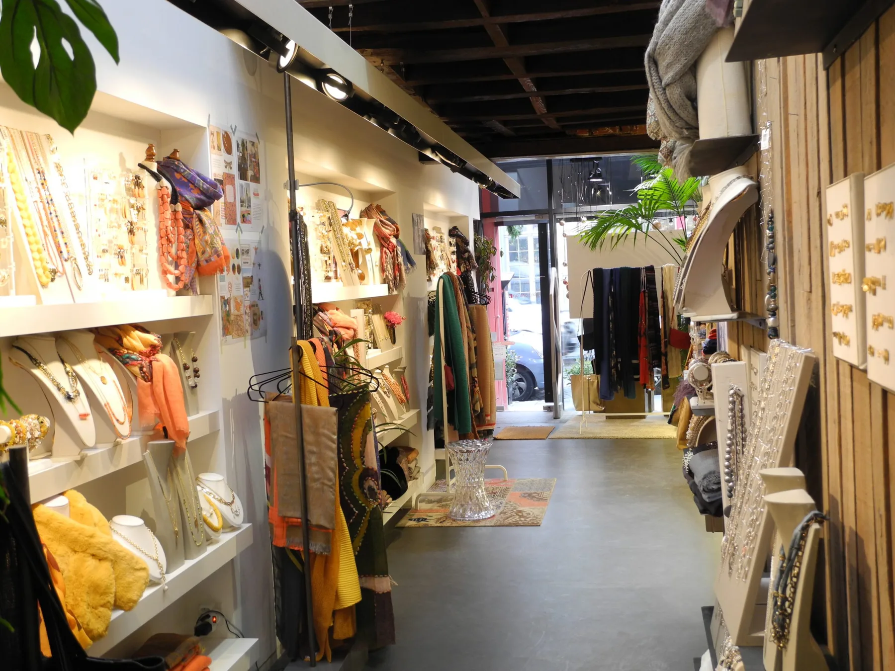
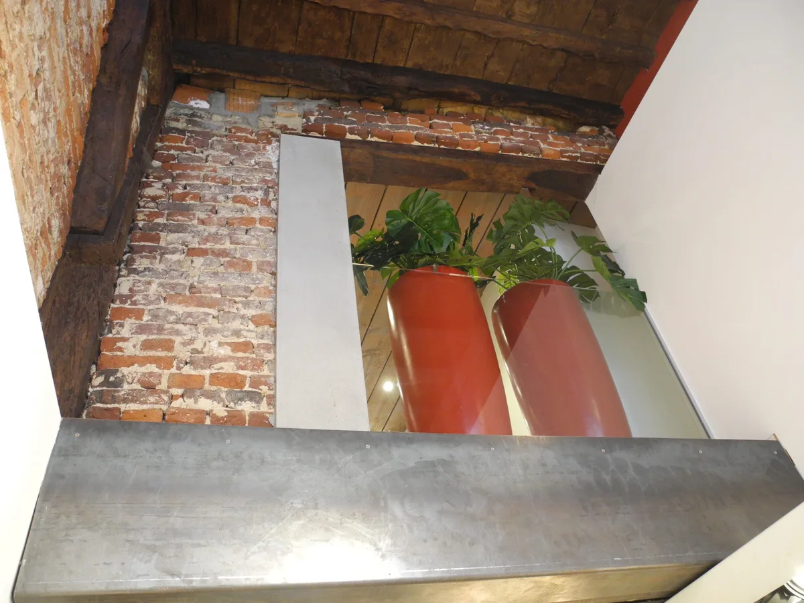
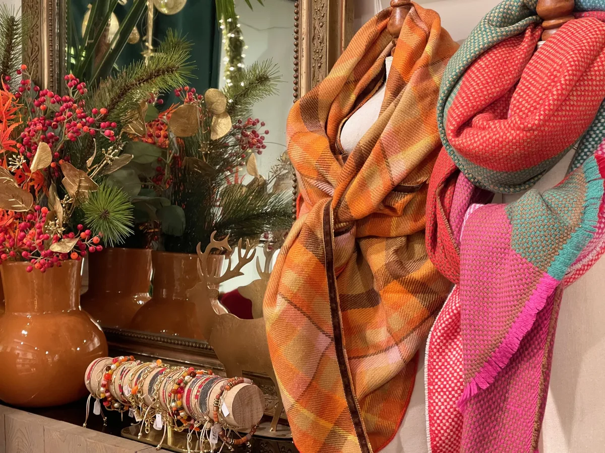
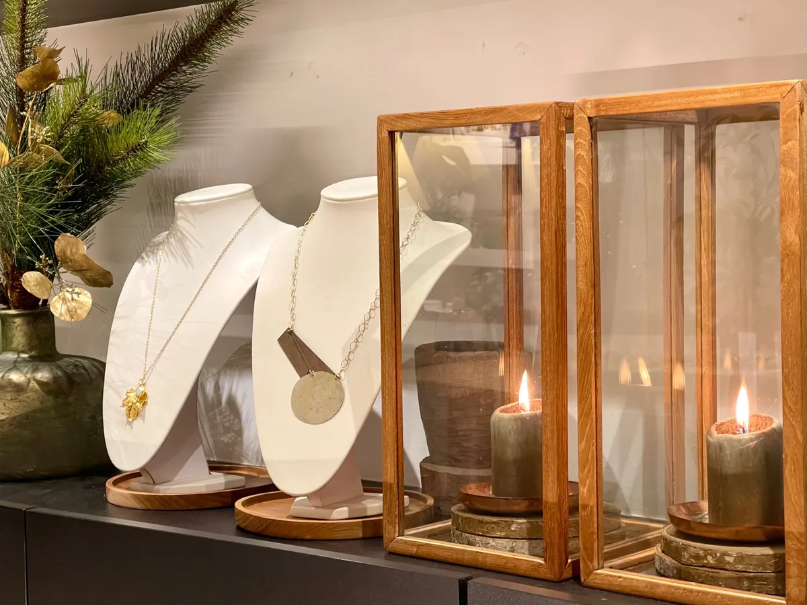
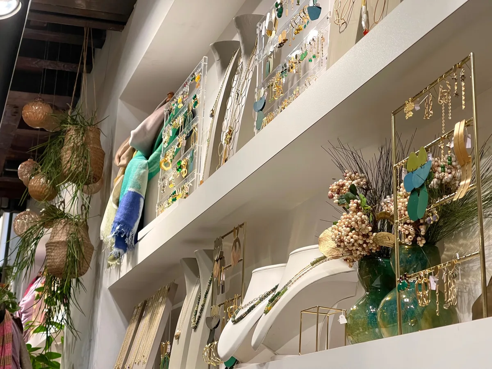
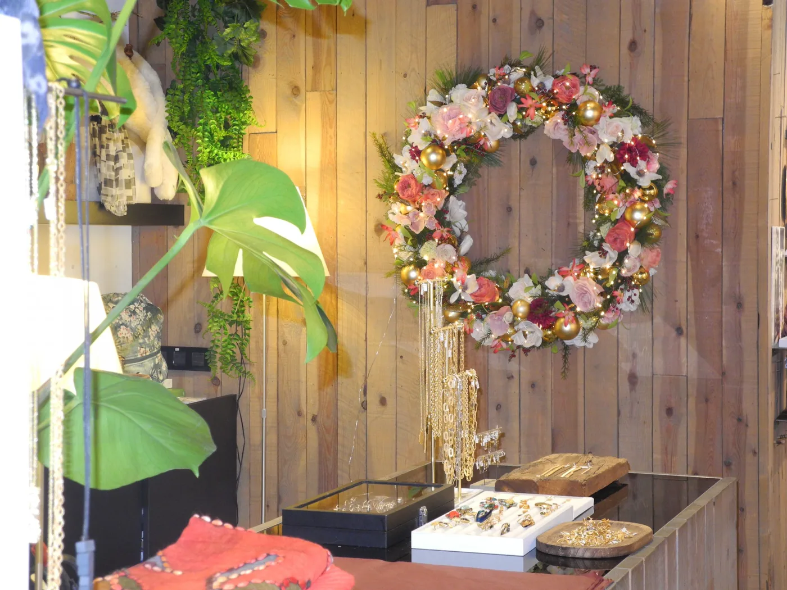
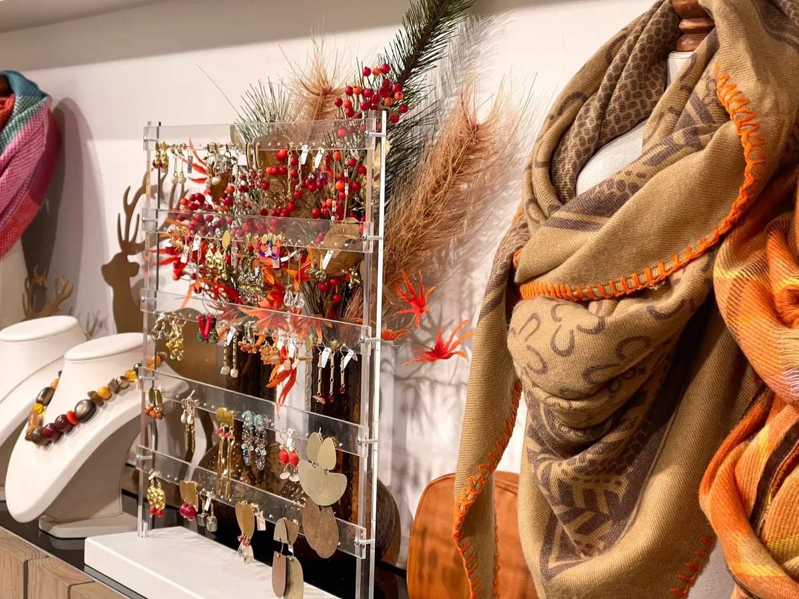
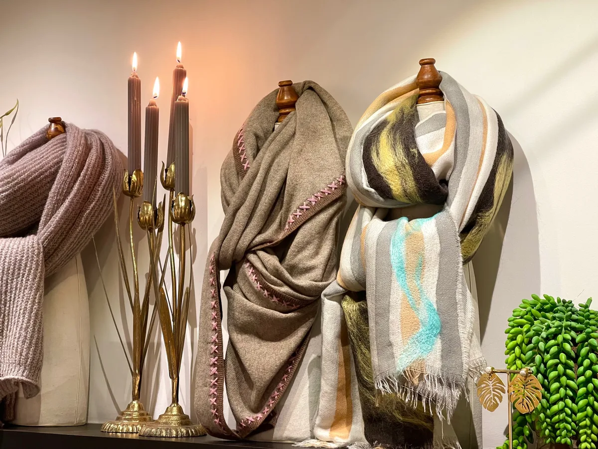
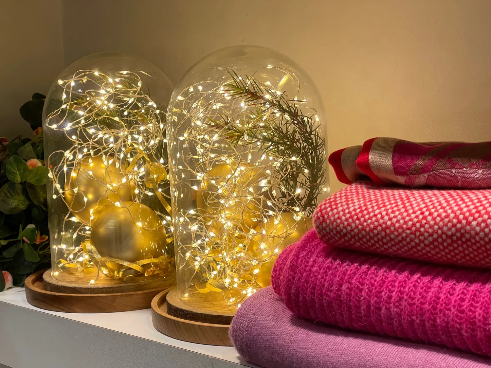

Kleur, glans en
aparte materialen.
Bij ons vind je een heel uitgebreide collectie modejuwelen, met daarbij een selectie sjaals en handtassen. Alles mag je rustig bekijken en passen.
Molenstraat42
Achter de gevel in het centrum van Aalst vind je een lange, lichte winkel met oude balken en rode baksteen. Juwelen hangen er tussen planten, takken en kaarslicht.
Bij Ann en Edwin krijg je persoonlijk advies. Twijfel je tussen twee oorbellen of zoek je iets voor iemand anders? Vraag het gerust.
- OpenWoensdag tot zaterdag
- Uren10 tot 18 uur
- Bellen0479 32 47 97



Even binnenkijken.
Een paar beelden uit de winkel. Op Instagram tonen we wat er net binnen is.







Geen idee wat
ze mooi vindt?
Geef een kadobon van Atelier 42. Dan kiest ze zelf, op haar gemak, in de winkel. Het bedrag kies je zelf. Wil je iets buiten de vaste bedragen, vraag het ons gerust.
€ 20 tot € 300
Vraag een kadobon aanTot in de
Molenstraat.
Je vindt ons in het centrum van Aalst, op wandelafstand van de Grote Markt.
- Woensdag10 tot 18 uur
- Donderdag10 tot 18 uur
- Vrijdag10 tot 18 uur
- Zaterdag10 tot 18 uur
- Zondag tot dinsdagGesloten